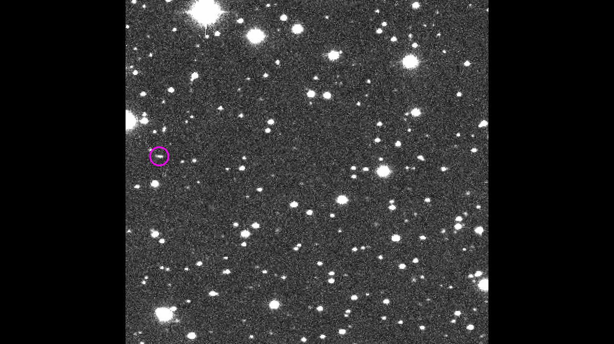
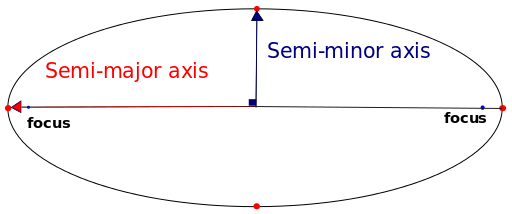
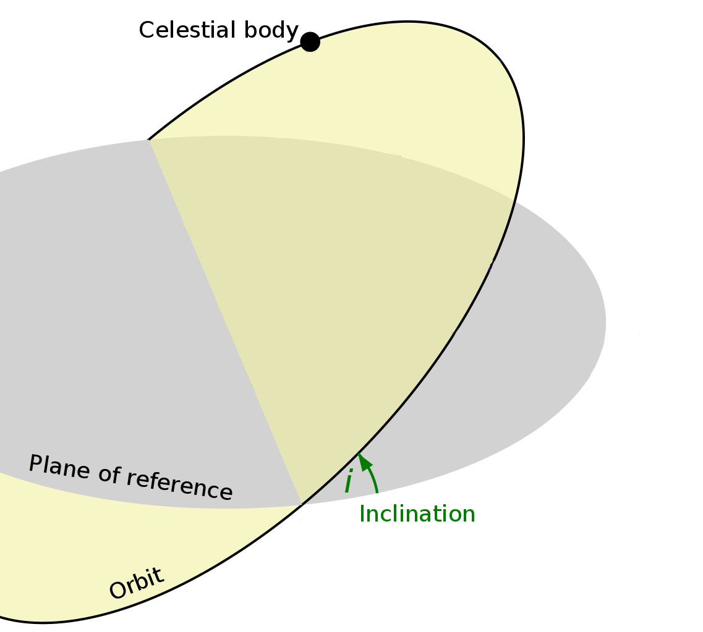
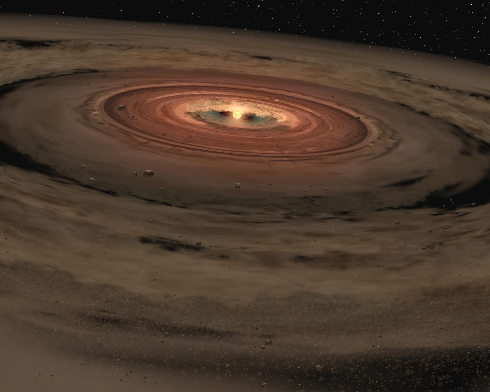
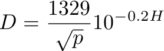
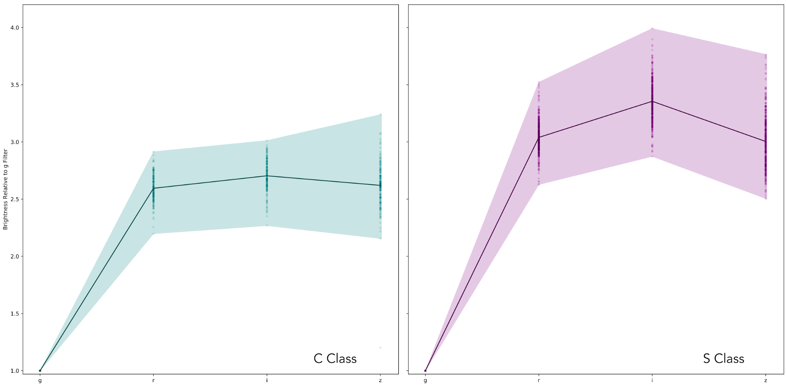
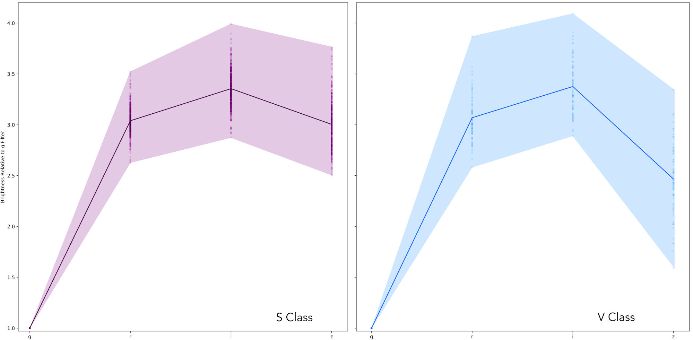

Surveying the Solar System
Introduction
For hundreds of years we had a simple model of our Solar System: eight planets and their moons, and occasionally a passing comet. Then came the discovery of the first asteroid, Ceres, in 1801, an indication there was more going on out there than we thought. Sure enough, over the next 200 years about 800,000 small Solar System objects (which includes asteroids, comets, and trans-Neptunian objects) were discovered. At first the rate of discovery was slow, but advances in technology, which have made it possible to detect smaller and more distant objects, have sped up the process.
The Large Synoptic Survey Telescope (LSST) is the most powerful observational tool we’ve ever had; the size of its mirrors and the sensitivity of its camera combine to help us see more objects in our Solar System than ever before. Each image taken by LSST covers a large area of the sky, and captures light even from very faint objects, making it possible to measure the motions of millions of small Solar System objects per night. Many of these are brand new discoveries.
In this investigation, you will use real data from LSST to develop a deeper understanding of how small objects are distributed throughout the Solar System. You will also examine the orbits and characteristics of some newly detected Solar System objects, in order to classify them. Together, these observations will help us put together the story of how our Solar System formed, and give us insights into what we might find around other stars that have exoplanets. Once you’ve completed this investigation you will be able to answer the following Essential Questions:
Essential Questions
- What unique orbital properties exist among the different small objects in the Solar System?
- How can observations of small objects give us information about their sizes and compositions?
- What can observations of small objects reveal about the formation and history of the Solar System?
Each night, LSST takes two images of the same star field, at least thirty minutes apart. The images are compared by computer software, and if anything has moved an alert is automatically generated, and the data sent to the IAU Minor Planet Center (MPC). Within hours, the MPC determines a preliminary orbit for the object.
Below are some sample observations of moving Solar System objects. Observe how each object moves in relation to the star field. Each image is a 30-second exposure.
Figure 1. Multiple observations of two different small Solar System objects. Credit: Catalina Sky Survey/ Lunar and Planetary Laboratory/ University of Arizona
- Is the amount of time it takes for the two objects to move across the sky approximately the same?
- The object that takes a longer time to move across the field of view is from the Sun, and will have a orbital period.
To estimate the orbit of a newly discovered Solar System object, astronomers map its position and record the time it takes to travel from one place to another. By making a series of careful measurements, they can determine a preliminary orbit for the object. The orbit is mathematically expressed through a series of orbital elements. The ones used in this investigation are described below:
The semi-major axis is half of the longest diameter of an ellipse. Simply put, this number indicates the size of the orbit. It is measured in astronomical units (AU).
Fig. 2: An image indicating the semi-major and semi-minor axis of an ellipse. Credit: Sae1962, Creative Commons 4.0 international.
{kind=link}
Eccentricity is a mathematical way of describing how elliptical (i.e., oval shaped) an orbit is. Eccentricity values range from 0 to almost 1. An eccentricity of 0 describes a perfectly circular orbit. The larger the eccentricity, the more elliptical the orbit.

Fig. 3: Examples of ellipses with different eccentricities. NASA illustration by Robert Simmon.
Inclination is the angle that the object’s orbital plane is tilted, relative to Earth’s orbital plane around the Sun. A value of 0° means that the orbit is parallel with Earth’s orbit. A value of 90° means that the orbit is tilted at a right angle to Earth’s orbit. Occasionally, a value between 90° and 180° is listed. These objects are in retrograde orbits around the Sun, orbiting in the opposite direction of most Solar System objects.
Fig. 4: An image describing the inclination of an orbit. Credit: Modified from image by Lassuncty, Creative Commons 3.0 Unported.
The Big View of the Solar System{kind=link}
LSST will discover millions of new Solar System objects, and will provide an enormous data set that gives us a more comprehensive view of the objects’ distribution. The more we identify and map the distribution of objects in our Solar System, the more we can learn about how it formed.

Fig. 5: Three objects in the Asteroid Belt, shown to scale. Image credit NASA/JPL.
For the purposes of this investigation, we have divided the small Solar System objects into four categories:
- Main belt asteroids (MBAs) - Objects located from 2 to 4 astronomical units (AU) from the Sun, between the orbits of Mars and Jupiter.
- Near-Earth objects (NEOs) - Asteroids or comets whose orbit intersects the orbit of Earth.
- Trans-Neptunian objects (TNOs) - Objects that orbit the Sun, at or beyond the orbit of Neptune, at a distance of about 30 AU and beyond. This area includes the Kuiper Belt and the entire region out to the inner Oort Cloud, which begins at approximately 2000 AU from the Sun.
- Comets - Icy objects found throughout the Solar System.
Fig. 6: Comet Hale-Bopp. Credit: E. Kolmhofer, H. Raab; Johannes-Kepler-Observatory, Linz, Austria
Now you’ll use a data visualization tool called the Orbit Tracker to explore the positions and orbital characteristics of some small Solar System objects. All of the displayed points and their motions represent the positions and behavior of real objects that have previously been discovered.
Begin by selecting all objects and setting the view to fully zoomed out, then zoom in as necessary to explore. Experiment with changing the view of the Solar System orbits. Notice that you can change the view to above or below the Sun, as well as along the plane of the Solar System (as if you were a planet orbiting the Sun).
- Observe the orbits of the objects and describe what is similar and what is different about these objects.
Next, take time to examine each group of objects individually by selecting the object type in the Orbitmaster and paying attention to the four orbital characteristics listed below. Decide which of the statements provided below best describes each group’s orbital characteristics. Use the provided statements to complete the table in question 4.
- Eccentricity
- Most orbits are similar to the shape of Earth’s orbit (nearly circular)
- Most orbits are very different from the shape of Earth’s orbit (noticeably elliptical)
- There is a wide range in the shapes of the orbits
- Inclination
- Most orbits are similar to Earth’s orbital plane
- Most orbits are considerably tilted compared to Earth’s orbital plane
- There is a wide range in the tilt of the orbits
- Size of the orbit
- The orbits are within the inner Solar System (closer to the Sun than Jupiter)
- The orbits are located in the outer Solar System (beyond the orbit of Jupiter)
- The orbits span both the inner and outer Solar System
- Direction of the orbit
- Most objects orbit the Sun in the same direction as Earth’s orbit
- Many objects orbit the Sun in the opposite to the direction of Earth’s orbit
- Complete the table below, choosing from the answers listed above.
| Eccentricity | Inclination | Size of orbit | Direction of orbit | |
|---|---|---|---|---|
| NEOs | ||||
| MBAs | ||||
| TNOs | ||||
| comets |
- According to Kepler's Third Law, and the information you recorded in your table, which of the four types of objects will have orbital periods shorter than Jupiter and which will be longer than Jupiter?
- Complete this sentence: When an object is closest to the Sun in its orbit, the gravitational force it experiences is the , and its orbital speed at that location is the .
In order to see general trends more clearly, it’s helpful to work with a large data set. Although your eyes can discriminate differences among a few hundred objects, it’s not possible to do so when the numbers get much larger. Plots are useful tools for examining larger data sets.
Use the Plotter to construct a histogram of the number of small Solar System objects on the y-axis vs. distance from the Sun (semi-major axis) on the x-axis. Select all objects.
- Which group of Solar System objects is the most common?
- . There are two main groups of small objects. One group is centered at a distance of approximately AU from the Sun, and the second group is centered at a distance of AU from the Sun.
According to the Solar Nebula Theory, a spinning cloud of dust and gas collapsed and the young Sun began to form at the center, while dusty and icy objects began to grow by repeated collisions with each other in a flattened accretion disk surrounding the Sun.
Fig. 7: This artist's concept shows a very young star encircled by a disk of gas and dust. The Solar Nebula Theory predicts an accretion disk such as this where Solar System objects would form. Image Credit: NASA/JPL-Caltech.
There is significant evidence to support this theory. Observations of star-forming regions reveal similar accretion disks around young stars in other parts of the galaxy. Another piece of evidence that supports the theory is the the fact that rocky planets formed close to the Sun and icy planets formed at greater distances. This can be explained by the higher temperatures closer to the Sun, which prevented the inner planets from retaining most of their original atmospheres and ices.
We can also find evidence to support the Solar Nebula Theory by studying the motions of objects within the Solar System. To collect this evidence, we’ll go back to the Orbit Tracker and look for overall patterns in the way objects orbit the Sun. Use your completed chart and the visualization to answer these questions:
- of Solar System objects orbit in the same direction around the Sun
- If the direction of an object’s orbit were random, there would be a 50/50 chance that two objects would travel around the Sun in the same direction. Do the orbits you observe appear to be the result of random chance? If not, what might explain their motions and orientation?
Although the orbital motions of all of the major planets support the Solar Nebula Theory, many of the small Solar System objects have very eccentric or highly inclined orbits, and some even orbit the Sun in the opposite direction as the planets. We can apply Newton’s Laws to help explain these observations:
- Imagine a close encounter in space between two objects, one with a large mass, and one with a small mass. As the objects approach each other, the forces they exert on each other must be equal according to Newton’s Third Law. Which object would experience a greater acceleration? Hint: think about Newton’s Second Law (Force = mass X acceleration).
These interactions are orchestrated by the big player in this story, gravity. Although the Sun is the dominant mass of the Solar System, local gravitational interactions play a role as well. From the early days of the Solar System to the present time, there have been many such interactions between objects. Complete the statement below to summarize what happens during these encounters:
- Close encounters between small Solar System objects can result in changes in their orbits. The ___ the mass of an object, the ___ likely a close encounter will change the object’s orbital characteristics, such as ____ and ____. In addition to mass, the distance between the two objects is a factor. Objects that are more widely separated are ___ likely to experience a change in their orbits as a result of a close encounter.
Even through the most powerful telescopes on Earth, asteroids and TNOs are too far away to look like anything bigger than dots in an image, or maybe streaks (if they are moving very fast). However, we can still use images to learn a lot about these small objects. For example, we can use the brightness of an asteroid to estimate its size.
- The larger the asteroid, the it will appear, because its surface will reflect light
Complete the statement, using your reasoning abilities:
To estimate the size of an asteroid, we use its absolute magnitude, which can be thought of as the asteroid’s actual brightness (as opposed to how bright it appears to an observer on Earth). An asteroid’s absolute magnitude depends only on its size and its albedo. Albedo is a measure of the reflectivity of the surface of an object. An object that is pure white will reflect 100% of the light that hits it and will have an albedo of 1. An object that is pure black will reflect 0% of the light that hits it and will have an albedo of 0. The albedos for asteroids depend on the material on the surface, but they range from 0.05 (5%) to 0.25 (25%).
The equation for calculating the size of an asteroid is given by:
Where D is the diameter of the asteroid (in kilometers), H is the absolute magnitude of the asteroid, and p is the albedo of the asteroid. You can visit this website to calculate the diameter.
Use the Plotter to construct a scatter plot of size on the y-axis vs. distance from the Sun (semi-major axis) on the x-axis. Select all categories of objects.
- Based on the scatter plot, which group is mostly made up of dim, small objects, and which is mostly made of bright, large objects?
- If there were many bright, large NEOs, would the scatter plot have looked different? If so, how (where would this data have been on your plot)?
- The scatter plot shows few dim, small TNOs. Is it possible that there are small TNOs that we don't see at all? Why might we not be able to see them?
- Based upon the scatter plot and your answers for the previous questions, which of these statements are true?
- There are mostly small objects (less than 10 km in diameter) nearby.
- There are mostly large objects (greater than 10 km in diameter) far away.
- Throughout the Solar System, there are far more small objects than large objects.
You will be randomly assigned three small Solar System objects that have been recently discovered by LSST. Your choices for classifying each object are:
- MBA
- TNO
- NEO
- comet
- none of the above
Consider factors such as the object’s absolute magnitude, and the size, shape, and tilt of its orbit. Then, give an explanation and evidence for your classification.
Begin by selecting the first object (Object 1) from the drop-down menu on the Orbit Tracker, then repeat for the next two objects.
- For each object, complete the table below.
| Objectr | Name | Object Type | Data/Evidence | |
|---|---|---|---|---|
| 1 | ||||
| 2 | ||||
| 3 |
Look at the orbits of the three objects and find the one that has the highest eccentricity. Use the play buttons to see where the orbital speed of the object is the fastest.
- Where is this object located on its orbit (relative to the Sun) when it is moving at its fastest speed?
- Explain your above answer using ideas from Kepler’s Laws and Newton’s Laws.
There are many different classes of asteroids. C-class (“carbonaceous”) asteroids are the most common, making up about 75% of all known asteroids. They are mostly made of clay and rock, and are dark gray in color. These asteroids are of interest because they contain significant amounts of water, which future space explorers could use for life support and for the production of rocket fuel.
S-class (“silicaceous”) asteroids are the second most common, and make up about 17% of known asteroids. Greenish to reddish in color, they are made mostly of rock and metals. They contain large amounts of precious metals, such as gold, platinum, and iridium. Scientists estimate that some S-class asteroids have several trillion dollars worth of metals in them, which makes them of interest to potential mining operations.
We can learn about the composition of a Solar System object by measuring its brightness through multiple filters. The two plots below show the differences in brightness of C-class and S-class asteroids when measured through LSST’s g, r, i, and z filters:
Figure 8: C and S class asteroids display brightness differences when measured through different filters.
For each plot, the horizontal (x) axis shows four filters. The vertical (y) axis is a measure of brightness compared to the g filter. For example, if the r filter shows a brightness value of 3, it means that the asteroid appeared three times brighter through the r filter than it was when measured through the g filter.
- What characteristic of the displayed data do you need to compare in order to determine if an asteroid is a C-class or an S-class
There are other kinds of asteroids as well. For example, V-class asteroids are rare asteroids that have a surface made primarily of basalt. Below is a brightness comparison between S-class and V-class asteroids.
Figure 9: S-and V-class asteroids display brightness differences when measured through different filters.
- Which filter is most useful for determining the difference between these two objects? Explain your answer.
- At least one of your three objects newly detected by LSST is an NEO. Determine its type (C or S) by using the plotter tool to construct a curve. Explain how you decided.
- Use the calculator found here to determine the diameter of your NEO. The average albedo for C-class asteroids is 0.06 and the average albedo for S-class asteroids is 0.20.
- Select an object on Earth that is roughly the size of your asteroid.
Discuss and Report
- Evaluate your NEO’s economic potential for mining. First, consider what class of asteroid you have. Next, think about how hard it would be to travel to this asteroid from Earth. Traveling to an asteroid that is moving at a velocity similar to Earth’s would require less rocket fuel, so an NEO with an orbit most similar to Earth is optimal. Consider an asteroid’s orbital characteristics such as semi-major axis, eccentricity, and inclination. Explain how you arrived at your answers
- Compare your NEO to others in your class or workgroup. Which has the most economic potential? Explain
Summary
- Choose one group of Solar System objects (such as TNOs) or a subcategory of a major group. Write a user guide to characterize the group. Include ranges of data and descriptions that you have learned as a result of this investigation, such as orbital elements, composition, location, size, and color. You may use the Plotter to investigate the data for your group.